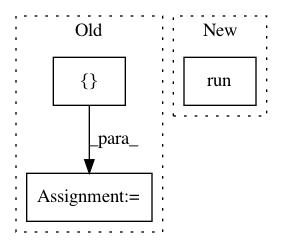

47c71c0524c7804863f2f4bcffdef5a873d84a55,txtgen/modules/connectors/connectors_test.py,TestConnectors,test_concat_connector,#TestConnectors#,97
Before Change
decoder_size1 = 16
decoder_size2 = (16, 32)
decoder_size3 = tf.TensorShape([16,32])
categorical_connector = StochasticConnector(1)
gauss_connector = ReparameterizedStochasticConnector(variable_size)
constant_connector = ConstantConnector(constant_size)
concat_connector1 = ConcatConnector(decoder_size1)
concat_connector2 = ConcatConnector(decoder_size2)
concat_connector3 = ConcatConnector(decoder_size3)
// pylint: disable=invalid-name
mu = tf.zeros(gauss_size)
After Change
categorical_state = categorical_connector(categorical_ds)
constant_state = constant_connector(self._batch_size, value=1.)
with tf.Session() as debug_sess:
debug_cater = debug_sess.run(categorical_state)
state1 = concat_connector1([gauss_state, categorical_state, constant_state])
state2 = concat_connector2([gauss_state, categorical_state, constant_state])
In pattern: SUPERPATTERN
Frequency: 5
Non-data size: 3
Instances
Project Name: asyml/texar
Commit Name: 47c71c0524c7804863f2f4bcffdef5a873d84a55
Time: 2017-10-16
Author: junxianh2@gmail.com
File Name: txtgen/modules/connectors/connectors_test.py
Class Name: TestConnectors
Method Name: test_concat_connector
Project Name: NifTK/NiftyNet
Commit Name: fa7ee697076d2061faeaf7ebf20cdcd5da352eae
Time: 2018-10-30
Author: elias.tappeiner@umit.at
File Name: tests/application_driver_test.py
Class Name: ApplicationDriverTest
Method Name: test_multi_device_multi_optimiser_gradients
Project Name: hanxiao/bert-as-service
Commit Name: d97188ee62bc0627235578485c5df7d3245fa1ed
Time: 2018-12-02
Author: hanhxiao@tencent.com
File Name: example6.py
Class Name:
Method Name:
Project Name: asyml/texar
Commit Name: fe50234d231d1a62703debc5fab4995ecf06001d
Time: 2017-10-05
Author: junxianh2@gmail.com
File Name: txtgen/modules/connectors/connectors_test.py
Class Name: TestConnectors
Method Name: test_concat_connector
Project Name: GPflow/GPflow
Commit Name: b4da4d91f00e2b09550cb73659d53834bd180ce0
Time: 2016-01-17
Author: james.hensman@gmail.com
File Name: testing/test_transforms.py
Class Name: TransformTests
Method Name: test_tf_np_forward